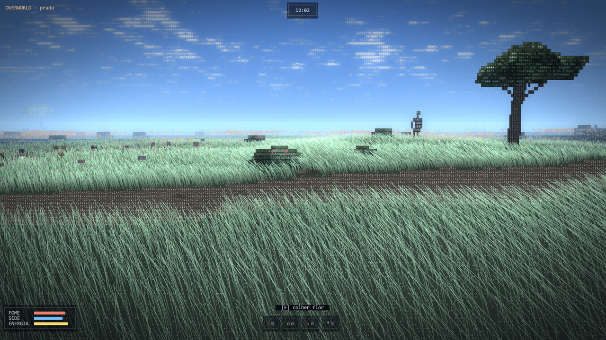
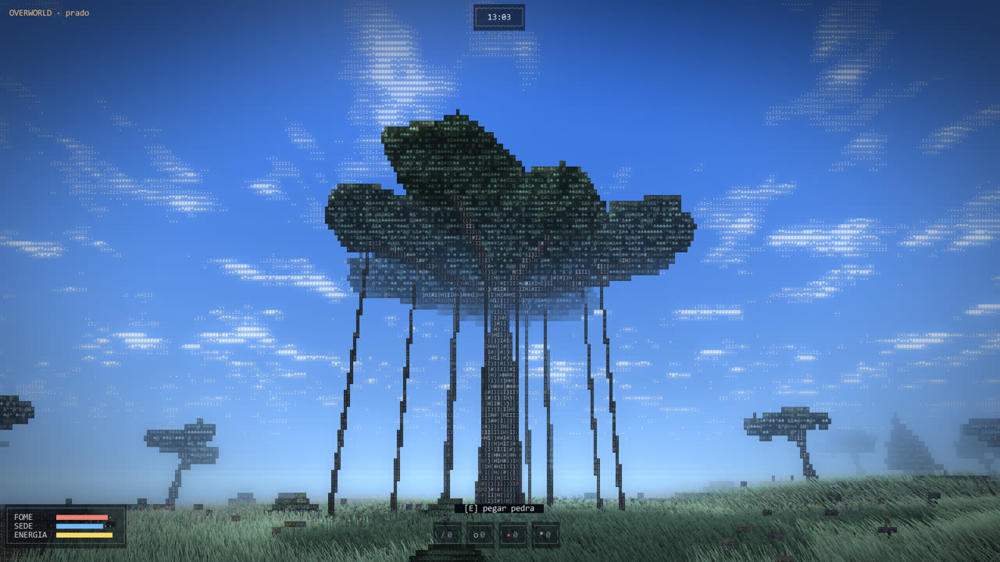
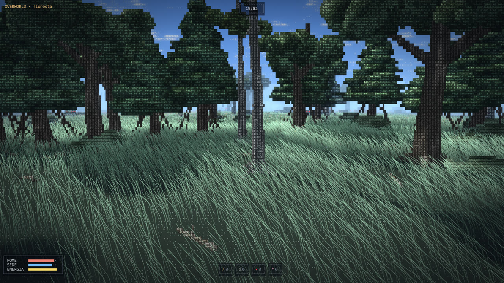
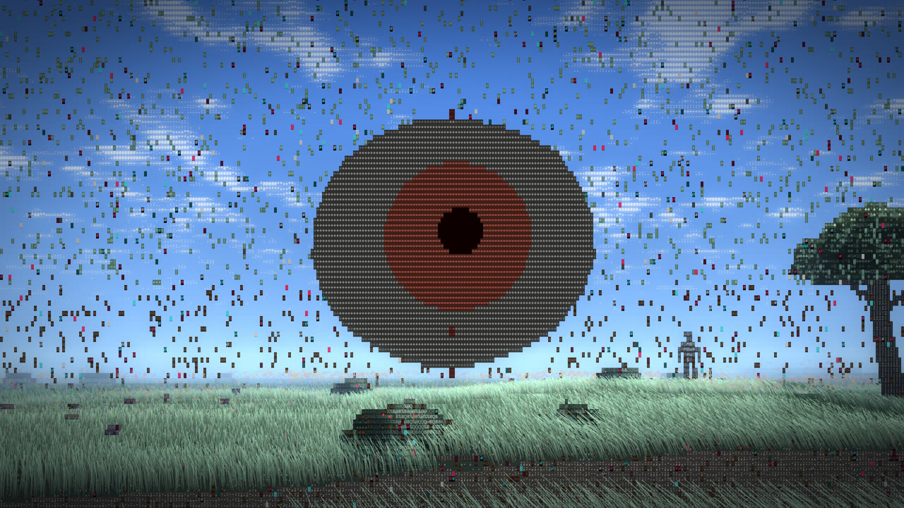
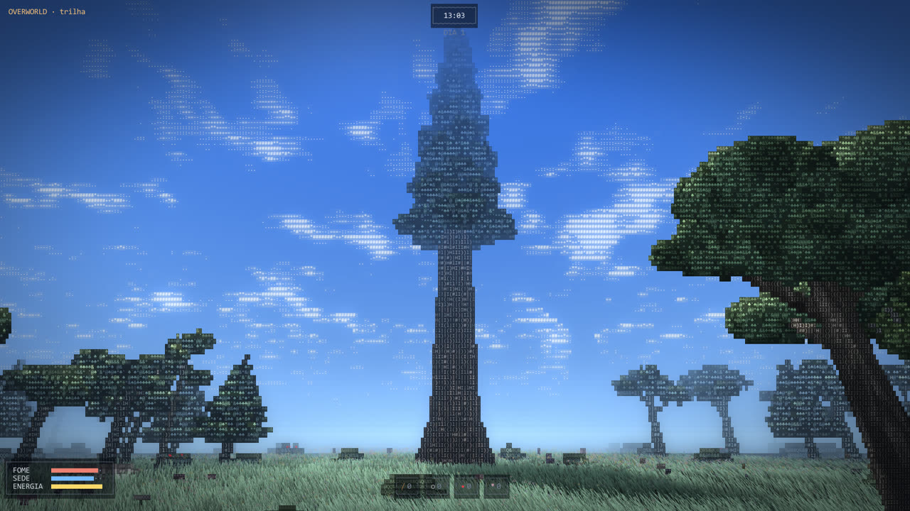
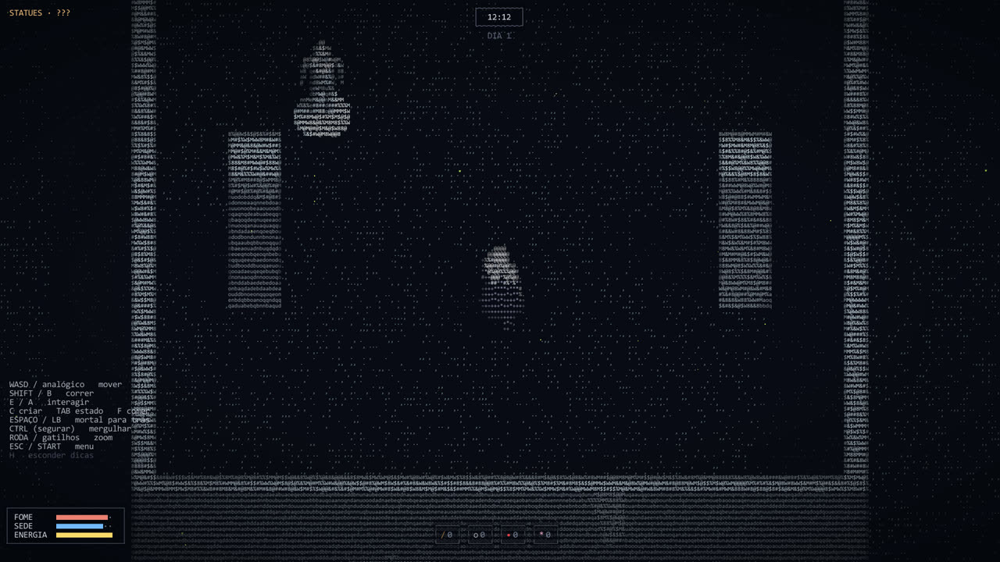
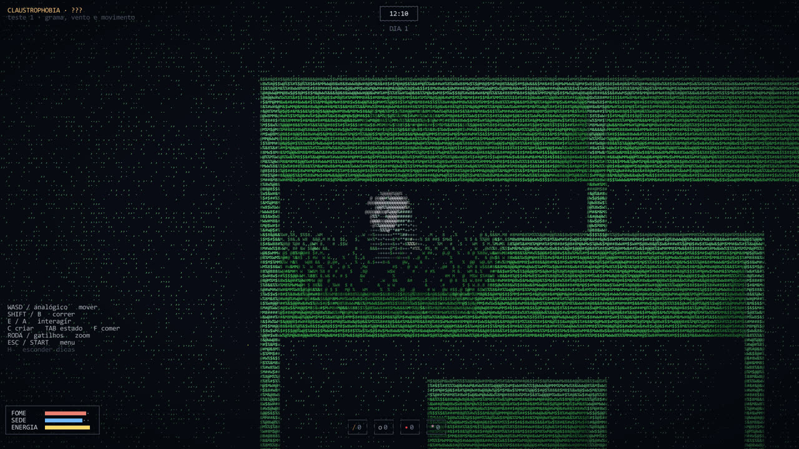

███ ████ ███ ███ █ ███ ███ ███ █ █ █ █ █ █ █ █ █ █ █ █ █ █ ██ ███ ████ ██ █████ █ █ █ █ █ █ █ █ █ █ █ █ █ █ █ █ ███ █ █ ███ █ █ ███ ███ █ █ █
Terra, 1996. Uma segunda-feira qualquer.
E então, grama.
S-Reality é um jogo de exploração e sobrevivência desenhado inteiramente com caracteres. Um mundo infinito, calmo e bonito — com portas escondidas para lugares que não deveriam existir. Siga seus instintos.






.zip.S-Reality.exe. Se o Windows mostrar “O Windows protegeu o computador”, clique em Mais informações → Executar assim mesmo (o jogo ainda não tem assinatura digital).| mover | WASD | analógico esq. |
| olhar | mouse | analógico dir. |
| correr | Shift | B |
| interagir | E | A |
| trocar câmera | V | Select |
| menu / controles | Esc | Start |